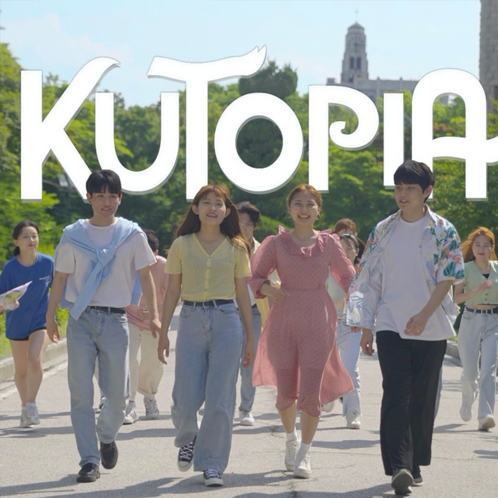
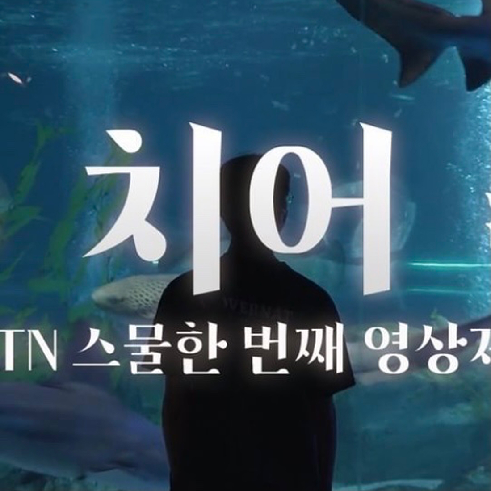
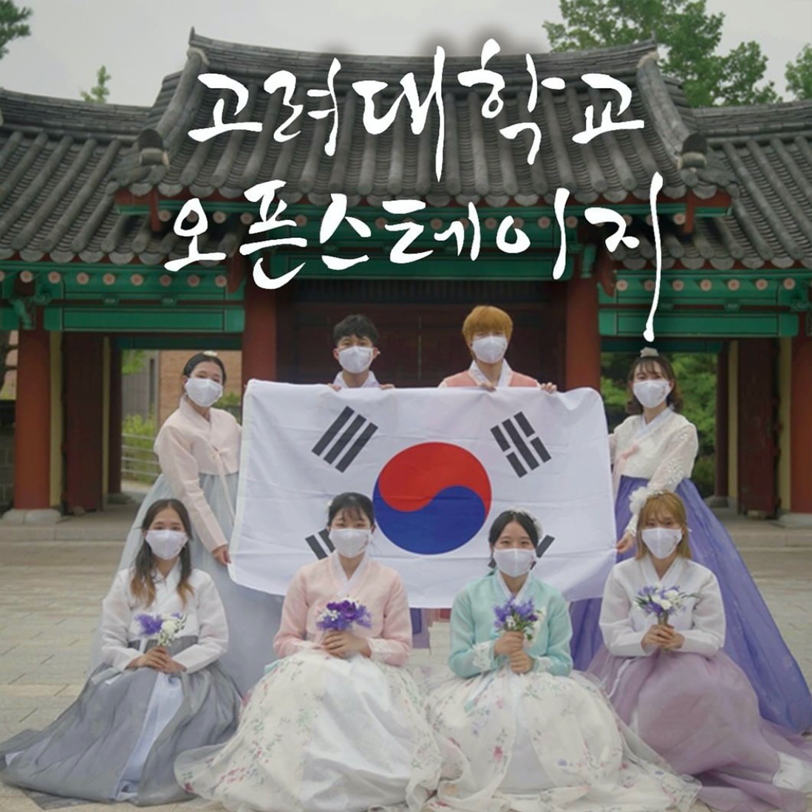
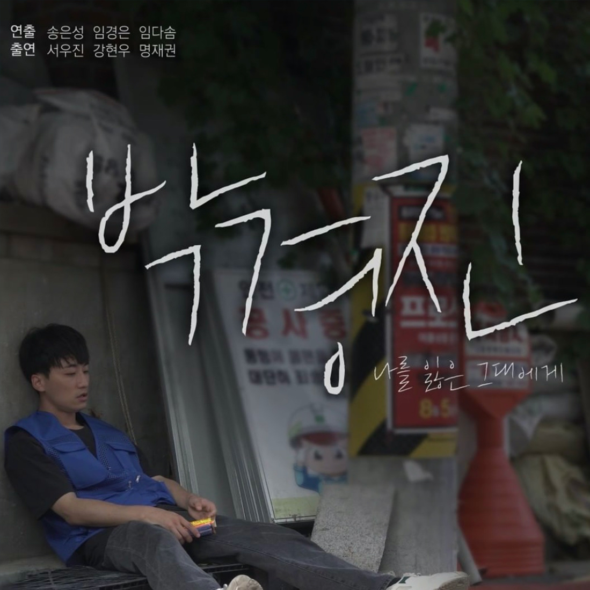

KTN OFFICIAL
고려대학교를 대표하여 선보이는 KTN표 공식 행사 영상! 입실렌티부터 고연전, EBS BLOSSOM까지 함께 즐겨보아요!

KTN REGULAR
KTN 정규 국원의 창의적인 아이디어가 돋보이는 정규 기획 영상!KTN의 다양한 목소리를 만나보세요!

KTN SPECIAL
KTN 주최 행사 영상! 학기초 새내기 환영 영상 부터 KTN 홍보영상, KTN 영상제까지! 스페셜한 영상이 가득!

KTN SERIES
KTN 자체제작 시리즈 버스킹 시리즈, 학과 인터뷰 시리즈, 댄스 시리즈 등 다양한 장르의 시리즈를 만나보세요!

KTN PRESENTS
KTN이 선보이는 독보적인 창작물! 단편 영화부터 드라마까지 KTN 수습국원의 땀과 노력이 담긴 작품!